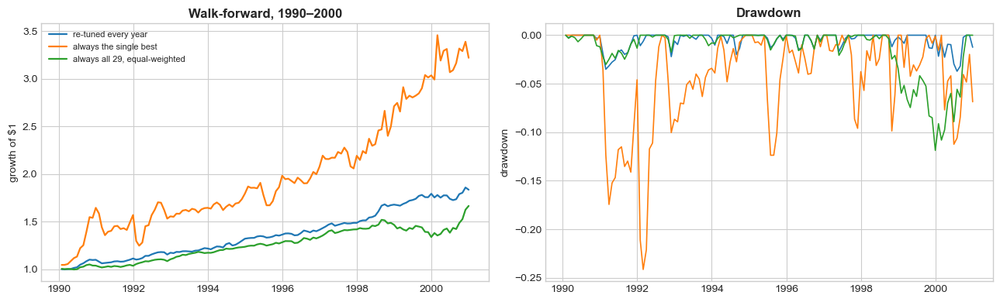

10. Backtesting: Estimate, Tune, Test#
10.1. 🎯 Learning Objectives#
By the end of today you will be able to:
Split a sample three ways — estimate, tune, test — and say what each one is for
Tune a strategy honestly, choosing its parameters on data you will not report on
Run a walk-forward test and read it on a risk-adjusted basis
Recognise data leakage in four forms, including one you cannot see
Report a result properly — standard errors, a bootstrap, and a fragility check
Adjust a t-statistic for how many things you tried
10.2. 📋 Today’s Plan#
10.3. 🛠️ Setup#
#@title Setup — run this first
import numpy as np
import pandas as pd
import statsmodels.api as sm
import matplotlib.pyplot as plt
from scipy.stats import norm
%matplotlib inline
plt.style.use('seaborn-v0_8-whitegrid')
plt.rcParams['figure.figsize'] = [11, 4]
import warnings; warnings.filterwarnings('ignore')
BASE = "https://raw.githubusercontent.com/amoreira2/UG54/refs/heads/main/assets/data"
# The 29 standard long-shorts from Lecture 5, cached. NYSE breakpoints,
# value-weighted, D10-D1, signal and weights lagged, dated by the month EARNED.
L = pd.read_parquet(f"{BASE}/longshort_29.parquet")
ff = pd.read_csv(f"{BASE}/ff_monthly.csv", index_col=0, parse_dates=True)
sharpe = lambda x: x.mean() / x.std() * np.sqrt(12)
print(f"{L.shape[1]} strategies, {len(L)} months, "
f"{L.index[0]:%Y-%m} to {L.index[-1]:%Y-%m}")
29 strategies, 251 months, 1980-02 to 2000-12
10.4. 1. One History, Many Attempts #
How many signals did your group look at before choosing one?
Assignment 3 ran your signal against four models. Before that you picked it, out of thirty.
Everything so far is in-sample.
One history of the US stock market, several attempts, and you reported the one that worked.
Not a criticism — it is the only history there is.
So your number is not the number a new investor would earn.
Today closes that gap with a process, not a statistic.
Three samples, each with one job, and a rule about which you may look at when.
10.5. 🛡️ Pitfall Checklist for Backtests #
Pitfall |
What goes wrong |
🔍 How to detect |
|
|---|---|---|---|
1 |
Random train/test split on a time series |
Trains on 1997, tests on 1985. Not out of sample at all |
Is the split chronological? |
2 |
Tuning on the sample you report |
The reported number includes the search |
Did you choose parameters on data you then reported? |
3 |
Comparing strategies on raw return |
The riskier one wins by construction |
Are the volatilities comparable? |
4 |
Changing the universe after seeing a result |
The inclusion rule is now part of the fit |
Was the universe fixed before the first run? |
5 |
A single t-statistic after many attempts |
1.96 is the threshold for one test |
How many did you try? |
6 |
Reporting the mean without the standard error |
A Sharpe of 0.7 and one of 0.5 look different and are not |
Print |
10.6. 🔄 Live Demo: Estimate → Tune → Test #
Goal: one rule for combining 29 strategies, and an honest estimate of how it performs.
The rule has two knobs.
N — how many strategies to hold, taking the best N.
W — how to weight them: equally, by inverse volatility, or by past Sharpe.
Nobody knows the right N and W in advance, so they are chosen from data.
Choosing from data is exactly what inflates a backtest.
The answer: spend three separate slices of history.
sample |
what it decides |
may you look at it? |
|---|---|---|
Estimate 1980–89 |
which strategies rank highest |
yes |
Tune 1990–94 |
N and W |
yes |
Test 1995–2000 |
nothing — it only reports |
once, at the end |
🤔 Before we start. Predict two things and write them down. Which N will tuning choose? And how much of the tuned Sharpe ratio will survive into the test sample?
10.6.1. Step 1 — Say how to split it#
🤔 The question. “Hold out some data so we can test out of sample.” Say that precisely enough for someone to implement. There is one word that decides whether the answer means anything.
# Two ways to hold out 30% of the data. Both "test out of sample".
from sklearn.model_selection import train_test_split
best = L.apply(sharpe).idxmax() # one strategy, to keep it simple
x = L[best]
rand_tr, rand_te = train_test_split(x, test_size=0.3, random_state=0) # shuffled
cut = int(len(x)*0.7)
chron_tr, chron_te = x.iloc[:cut], x.iloc[cut:]
print(f"strategy: {best}\n")
print(f"{'':28s}{'train':>9s}{'test':>9s}")
print(f"{'random split':28s}{sharpe(rand_tr):>9.2f}{sharpe(rand_te):>9.2f}")
print(f"{'chronological split':28s}{sharpe(chron_tr):>9.2f}{sharpe(chron_te):>9.2f}")
print(f"\nrandom test months run {rand_te.index.min():%Y-%m} to {rand_te.index.max():%Y-%m}")
print(f"chronological test months run {chron_te.index.min():%Y-%m} to {chron_te.index.max():%Y-%m}")
strategy: DivSeason
train test
random split 1.57 0.84
chronological split 1.28 1.55
random test months run 1980-07 to 2000-07
chronological test months run 1994-09 to 2000-12
10.6.2. An aside: the DivSeason strategy#
The “dividend month” strategy — Hartzmark and Solomon (2013, JFE).
Buy dividend payers in the months they are expected to pay; short them in the months they are not.
A 0/1 flag, defined only for firms that paid a dividend in the past year.
1 in a predicted dividend month, from the firm’s own calendar: a quarterly payer if it paid 2, 5, 8 or 11 months ago, a semi-annual payer if 5 or 11, an annual payer if 11.
0 in the other months. Non-payers have no value at all.
The usual story is price pressure, not risk.
Dividend-seekers buy ahead of the payment and push the price up; it reverses afterwards.
10.6.3. The random split is not a test#
Look at the date ranges: the random “test set” runs across the whole sample.
It is interleaved with the training data, month by month.
You trained on 1997 and tested on 1985 — and on the months either side of every month you trained on.
Returns are not independent draws.
Regimes persist, volatility clusters, and the same market conditions sit on both sides of the split.
So the random test tells you almost nothing new.
That is why the two numbers come out close, and why the closeness is meaningless.
📌 Remember
Out of sample means out of time. If the test data sits inside the period you fitted on, it is not a test.
10.6.4. Step 2 — Run the process#
#implementation — the three samples and the rule
EST = L.loc[:'1989-12-31']
TUN = L.loc['1989-12-31':'1994-12-31'].iloc[1:]
TST = L.loc['1994-12-31':].iloc[1:]
rank = EST.apply(sharpe).sort_values(ascending=False) # decided on ESTIMATE only
print(f"ESTIMATE {EST.index[0]:%Y-%m}–{EST.index[-1]:%Y-%m} ({len(EST)} months)")
print(f"TUNE {TUN.index[0]:%Y-%m}–{TUN.index[-1]:%Y-%m} ({len(TUN)} months)")
print(f"TEST {TST.index[0]:%Y-%m}–{TST.index[-1]:%Y-%m} ({len(TST)} months)\n")
print("top of the ESTIMATE ranking:")
for k, v in rank.head(4).items(): print(f" {k:22s}{v:>6.2f}")
ESTIMATE 1980-02–1989-12 (119 months)
TUNE 1990-01–1994-12 (60 months)
TEST 1995-01–2000-12 (72 months)
top of the ESTIMATE ranking:
ShareIss5Y 1.17
IdioVol3F 1.17
AnnouncementReturn 1.13
DivSeason 1.11
def combo(sample, names, scheme, est=None):
"""Return of a portfolio that holds `names`, weighted by `scheme`.
The weights come from the estimate sample `est`, then get applied to
`sample`. Leave `est` out and the main ESTIMATE sample (EST) is used.
"""
if est is None:
est = EST
# Step 1: one raw weight per strategy, computed on the estimate sample
if scheme == 'ew':
# equal weights: every strategy gets the same weight
w = pd.Series(1.0, index=names)
elif scheme == 'ivol':
# inverse volatility: calmer strategies get more weight
w = 1 / est[names].std()
elif scheme == 'sharpe':
# Sharpe weights: better strategies get more weight,
# and a strategy with a negative Sharpe ratio gets zero
w = est[names].apply(sharpe)
w = w.clip(lower=0)
else:
raise ValueError(f"scheme must be 'ew', 'ivol' or 'sharpe', not {scheme!r}")
# Step 2: rescale so the weights add up to 1
w = w / w.sum()
# Step 3: each month, multiply every strategy's return by its weight,
# then add across strategies
weighted = sample[names] * w
return weighted.sum(axis=1)
#The tune grid — the only thing you are allowed to look at
NS = [1, 3, 5, 10, 20, 29]; WS = ['ew', 'ivol', 'sharpe']
tune = pd.DataFrame({w: {n: sharpe(combo(TUN, list(rank.index[:n]), w)) for n in NS}
for w in WS})
tune.index.name = 'N'
print("TUNE-sample Sharpe\n"); print(tune.round(2).to_string())
bN, bW = tune.stack().idxmax()
print(f"\n -> the process picks N = {bN}, W = '{bW}' (tune Sharpe {tune.loc[bN,bW]:.2f})")
TUNE-sample Sharpe
ew ivol sharpe
N
1 0.99 0.99 0.99
3 1.56 1.84 1.54
5 1.27 1.82 1.29
10 1.31 1.62 1.29
20 1.61 1.90 1.46
29 1.67 1.66 1.50
-> the process picks N = 20, W = 'ivol' (tune Sharpe 1.90)
10.6.5. Step 3 — Now, and only now, the test sample#
test = pd.DataFrame({w: {n: sharpe(combo(TST, list(rank.index[:n]), w)) for n in NS}
for w in WS})
test.index.name = 'N'
print("TEST-sample Sharpe\n"); print(test.round(2).to_string())
print(f"\n{'the tuned choice N=%d, %s' % (bN, bW):44s}{test.loc[bN,bW]:>6.2f}")
print(f"{'naive: the single best estimate-sample signal':44s}{test.loc[1,'ew']:>6.2f}")
print(f"{'no tuning at all: all 29, equal-weighted':44s}{test.loc[29,'ew']:>6.2f}")
print(f"{'average over the whole grid':44s}{test.values.mean():>6.2f}")
TEST-sample Sharpe
ew ivol sharpe
N
1 -0.08 -0.08 -0.08
3 0.43 0.50 0.42
5 0.38 0.70 0.39
10 0.72 0.94 0.68
20 0.97 1.13 0.87
29 0.85 0.94 0.91
the tuned choice N=20, ivol 1.13
naive: the single best estimate-sample signal -0.08
no tuning at all: all 29, equal-weighted 0.85
average over the whole grid 0.59
10.6.6. Read the three numbers at the bottom#
The naive rule is the disaster: −0.08 in the test.
ShareIss5Yhad the best Sharpe ratio in the estimate sample, 1.17.Ten years of evidence, then six years of losing money on a risk-adjusted basis.
Tuning earned its keep: 1.13.
N = 20, inverse-vol, chosen without ever seeing the test data.
The crudest rule does well: 0.85.
All 29, equal weights, nothing tuned.
Most of what tuning added was the inverse-vol weighting, not the choice of N.
💡 Key Insight
Concentrating on the single best in-sample performer is the worst thing you can do with 29 candidates. Holding all of them, badly, beats it by 0.93 of a Sharpe ratio.
⚠️ Caution: one split is one draw
These numbers come from one choice of dates.
End the estimate sample in 1987, 1988, 1990 or 1991 and the ordering never changes — tuned beats all-29 beats best-1 — but the levels move by 0.2 to 0.5.
The ordering is the finding. The levels are not.
10.7. 2. Walk-Forward #
The three-way split spends its test sample in one go.
Once you have looked, there is no clean data left.
Walk-forward repeats the idea every year.
Rank on everything up to five years ago.
Tune on the years since.
Invest for the next twelve months, then roll forward.
Every month’s return is earned on parameters chosen before that month began.
Stitched together: a track record you could actually have lived through.
tuned, naive, allsig = [], [], []
for yr in range(1990, 2001):
# --- three windows, all strictly before or during this year ---------------
est_sample = L.loc[:f"{yr-5}-12-31"] # ESTIMATE: everything up to 5 years ago
tune_sample = L.loc[f"{yr-4}-01-01":f"{yr-1}-12-31"] # TUNE: the 4 years after that
this_year = L.loc[f"{yr}-01-01":f"{yr}-12-31"] # the year we actually trade
# --- rank the strategies on the ESTIMATE window only ----------------------
ranking = est_sample.apply(sharpe).sort_values(ascending=False)
# --- try every (N, scheme) on the TUNE window and keep the best -----------
best_sharpe = -np.inf
for n in NS:
for w in WS:
names = list(ranking.index[:n])
s = sharpe(combo(tune_sample, names, w, est=est_sample))
if s > best_sharpe:
best_sharpe, best_n, best_w = s, n, w
# --- trade this year with that choice, and with the two benchmarks --------
tuned.append(combo(this_year, list(ranking.index[:best_n]), best_w, est=est_sample))
naive.append(combo(this_year, list(ranking.index[:1]), 'ew', est=est_sample))
allsig.append(combo(this_year, list(ranking.index), 'ew', est=est_sample))
WF = {'re-tuned every year': pd.concat(tuned),
'always the single best': pd.concat(naive),
'always all 29, equal-weighted': pd.concat(allsig)}
print(f"1990-2000, {len(WF['re-tuned every year'])} months\n")
print(f"{'':32s}{'return/yr':>11s}{'vol/yr':>9s}{'Sharpe':>9s}")
for label, x in WF.items():
growth = (1 + x).cumprod() # value of $1 invested
drawdown = growth / growth.cummax() - 1 # how far below its previous peak
print(f"{label:32s}{x.mean()*12:>10.1%}{x.std()*np.sqrt(12):>9.1%}"
f"{sharpe(x):>9.2f}")
1990-2000, 132 months
return/yr vol/yr Sharpe
re-tuned every year 5.6% 3.8% 1.48
always the single best 11.8% 15.3% 0.77
always all 29, equal-weighted 4.8% 4.8% 0.99

10.7.1. The trap in that table#
On return alone the naive rule wins: 11.8% a year against 5.6%.
Picking the single best strategy each year roughly doubles your money relative to the disciplined process.
Now read across: that 11.8% comes with 15.3% volatility and a 24% drawdown.
The tuned portfolio runs 3.8% and 4%.
On a Sharpe ratio it is 0.77 against 1.48.
10.8. 3. What You Report at the End #
The test sample is used once, so take more than one number from it.
Six things, all computable from a return series:
the Sharpe ratio
its standard error
a bootstrap interval that assumes nothing about normality
alpha, its SE and the appraisal ratio
fraction to half
drawdown and tails
TEST SAMPLE ONLY, 1995-2000
vol SR SE t_SR boot5
label
tuned strategy 0.07 1.13 0.42 2.67 0.49
Mom12m alone 0.26 1.07 0.42 2.54 0.41
the market (benchmark) 0.16 0.93 0.42 2.22 0.22
alpha SE_a t_a appraisal frac_half maxDD
label
tuned strategy 0.123 0.023 5.419 2.308 0.097 -0.114
Mom12m alone 0.242 0.108 2.232 0.951 0.083 -0.296
the market (benchmark) — — — — 0.111 -0.197
(the benchmark has no alpha against itself — that is why the row is blank)
10.8.1. Two things in that table are worth stopping on#
The standard error of the Sharpe ratio barely moves.
About the same at 4% volatility as at 20%. That looks wrong and is not:
There is no σ in it.
The Sharpe ratio is a ratio: volatility is in both the numerator and the denominator and cancels, leaving how long you looked.
Simulate a true Sharpe of 0.5 over 250 months: the sampling standard deviation is 0.220 at 5% annual volatility and 0.220 at 80%.
A noisier strategy is harder to measure — in return units.
SE_a, the standard error of alpha, does scale with volatility: 2.4% to 4.4% a year across our strategies.
💡 Key Insight
SE(SR)tells you about your sample length.SE(alpha)tells you about your strategy. Report both and you have said something about each.
Fraction to half is a fragility test, not a performance test.
How many of your best months must go before the Sharpe ratio halves.
The market needs about 10%.
A strategy that needs 0.4% rests on two or three dates, and no t-statistic fixes that.
10.9. 4. Leakage #
All of the above assumes the test sample is genuinely unseen.
Leakage is when it is not. It arrives through the data, not the code.
One rule covers it:
Never use data in a backtest, on a given date, that you could not have used in production that day.
— Paleologo, The Elements of Quantitative Investing
Three forms you have met.
Forgetting to lag the signal (The Panel and Portfolio Mathematics): for short-term reversal that off-by-one turns t = −0.4 into +70.
Survivorship.
Financial statements dated to the quarter they describe, not the day they were released.
The fourth is invisible.
⚠️ Caution: the adjusted price series contains the future
Prices are adjusted backwards for splits, so a long history is comparable.
But a stock splits because it went up. A low adjusted price in 1985 says the stock split at some point after 1985 — so it rose.
Sort on adjusted price and you have sorted, partly, on future returns.
The fix is a division of labour: adjusted prices for computing returns, as-of-date prices for building signals.
📌 Remember: the protocol is part of the data
Fix the universe, the sample, and the split before the first backtest.
Changing your inclusion rule after a result you did not like is leakage too: the rule is now fitted to the outcome, and no hold-out sample can detect it.
10.10. 5. You Tried More Than One #
A t-statistic of 2 means: if nothing were there, I would see this about one time in twenty.
That is a statement about one test.
Run twenty and expect to see it once for free.
The simplest correction is Bonferroni.
Divide your significance level by the number of things you tried.
#The threshold, and what happens without it
print("t-statistic you need for 5% significance, having tried M signals\n")
print(f" {'M':>5s}{'t needed':>11s}")
for M in [1, 5, 10, 20, 29, 100, 300]:
print(f" {M:>5d}{norm.isf(0.025/M):>11.2f}")
print(f"\n Our menu is 29 signals -> the threshold is {norm.isf(0.025/29):.2f}, not 1.96.\n")
rng = np.random.default_rng(0)
print("100 strategies with NO true edge, 24 months each, 2000 simulations:")
for cut, lbl in [(1.64,'t > 1.64'), (1.96,'t > 1.96'),
(norm.isf(0.025/100), f't > {norm.isf(0.025/100):.2f} (Bonferroni)')]:
c = [((lambda R: R.mean(0)/(R.std(0)/np.sqrt(24)))(
rng.normal(0, 0.16/np.sqrt(12), (24,100))) > cut).sum() for _ in range(2000)]
print(f" {lbl:28s} look significant: {np.mean(c):>5.1f} of 100")
t-statistic you need for 5% significance, having tried M signals
M t needed
1 1.96
5 2.58
10 2.81
20 3.02
29 3.13
100 3.48
300 3.76
Our menu is 29 signals -> the threshold is 3.13, not 1.96.
100 strategies with NO true edge, 24 months each, 2000 simulations:
t > 1.64 look significant: 6.1 of 100
t > 1.96 look significant: 3.4 of 100
t > 3.48 (Bonferroni) look significant: 0.1 of 100
# What the correction costs you
def trial(cut, months, ideas=100, sims=600, true_SR=1.0, seed=1):
rng = np.random.default_rng(seed); ok = wrong = 0
for _ in range(sims):
R = rng.normal(0, 1, (months, ideas)); R[:,0] += true_SR/np.sqrt(12)
t = R.mean(0)/(R.std(0)/np.sqrt(months))
ok += t[0] > cut; wrong += (t[1:] > cut).sum()
return ok/max(ok+wrong,1), ok/sims
print("One real signal (Sharpe 1.0) hidden among 100 worthless ones.\n")
for months in (48, 120):
print(f" {months} months")
print(f" {'cutoff':>8s}{'hit rate':>11s}{'detection':>12s}")
for cut in (1.96, 3.00, norm.isf(0.025/100)):
h, d = trial(cut, months)
print(f" {cut:>8.2f}{h:>10.0%}{d:>12.0%}")
print()
One real signal (Sharpe 1.0) hidden among 100 worthless ones.
48 months
cutoff hit rate detection
1.96 15% 51%
3.00 41% 16%
3.48 54% 8%
120 months
cutoff hit rate detection
1.96 25% 90%
3.00 76% 58%
3.48 90% 38%
10.10.1. There is no cutoff that fixes this#
Two rates to keep apart.
Hit rate — how much of what you flag is real.
Detection rate — how often you find the real thing at all.
At 48 months, the conventional 1.96 mostly flags noise.
You detect the real signal about half the time, and 85% of everything you flag is noise.
The Bonferroni threshold is right most of the time, and rarely finds anything.
You find the real signal once in twelve.
Every cutoff trades one error against the other.
What breaks the trade-off is not a cleverer threshold. It is the second panel: at 120 months the same two cutoffs give 26%/90% and 93%/41%.
Length of sample is the only thing that buys you both.
A large part of why long histories are worth what they cost.
📎 Where this goes next
Bonferroni assumes independent tests. Ours are not — signals inside a family correlate around 0.58 (Where Factors Come From) — so it is conservative here.
Next class takes this to the published literature, where the number of things tried is not 29 but something nobody knows.
10.11. 6. How would we use the Estimate, tune, Test approach to evalaute the effectivness of our Hedge Portfolio approach?#
L
| Accruals | AnnouncementReturn | AssetGrowth | BM | BookLeverage | CBOperProf | CompositeDebtIssuance | DivSeason | DolVol | EP | ... | NOA | OrgCap | RealizedVol | ResidualMomentum | ReturnSkew | STreversal | ShareIss1Y | ShareIss5Y | Size | roaq | |
|---|---|---|---|---|---|---|---|---|---|---|---|---|---|---|---|---|---|---|---|---|---|
| date | |||||||||||||||||||||
| 1980-02-29 | 0.061713 | 0.108245 | 0.031917 | 0.021181 | 0.041902 | 0.007757 | -0.045759 | 0.033221 | -0.050956 | -0.063061 | ... | -0.077191 | 0.137858 | -0.044575 | 0.091178 | -0.010859 | -0.049277 | 0.044585 | 0.067304 | -0.024272 | 0.040777 |
| 1980-03-31 | -0.009889 | -0.028389 | -0.031438 | -0.056014 | -0.015595 | 0.076532 | 0.029222 | 0.023401 | -0.054283 | 0.074362 | ... | 0.077125 | -0.035088 | 0.147564 | -0.110532 | 0.017828 | 0.115119 | -0.001154 | -0.062102 | -0.084863 | -0.002191 |
| 1980-04-30 | 0.002517 | 0.003532 | -0.018262 | -0.009519 | -0.042241 | -0.046001 | -0.056233 | 0.009198 | 0.011126 | -0.010246 | ... | -0.024594 | 0.005334 | -0.004469 | 0.012654 | 0.017732 | 0.003925 | -0.062470 | -0.060229 | 0.012244 | -0.013732 |
| 1980-05-31 | -0.031976 | -0.005836 | -0.000312 | 0.009880 | -0.009736 | -0.029428 | -0.021600 | -0.013894 | 0.015479 | 0.013930 | ... | -0.006550 | -0.019443 | -0.019559 | 0.003930 | 0.021955 | 0.042565 | 0.018554 | 0.025646 | 0.015229 | -0.007598 |
| 1980-06-30 | 0.039993 | 0.024327 | 0.014083 | -0.016505 | -0.021167 | -0.009979 | -0.032471 | 0.007906 | 0.013432 | -0.035441 | ... | -0.012645 | -0.030009 | -0.003499 | 0.011989 | 0.016864 | 0.064204 | 0.003867 | -0.019813 | 0.014851 | 0.015639 |
| ... | ... | ... | ... | ... | ... | ... | ... | ... | ... | ... | ... | ... | ... | ... | ... | ... | ... | ... | ... | ... | ... |
| 2000-08-31 | -0.017961 | 0.023762 | -0.020781 | -0.002702 | -0.012305 | -0.028154 | -0.006047 | -0.006684 | -0.050139 | -0.037566 | ... | 0.022872 | -0.089518 | -0.097598 | 0.074698 | 0.036314 | -0.005940 | -0.014557 | 0.014832 | -0.027475 | -0.005007 |
| 2000-09-30 | -0.040075 | 0.048345 | 0.074626 | 0.086553 | -0.140414 | -0.007148 | 0.022332 | 0.047008 | 0.058826 | 0.166669 | ... | 0.087103 | 0.019689 | 0.126540 | 0.080068 | 0.101701 | 0.048605 | 0.091224 | -0.022723 | 0.013366 | -0.049255 |
| 2000-10-31 | 0.022824 | -0.008129 | 0.039936 | 0.064035 | -0.046828 | 0.122573 | 0.051797 | 0.008337 | -0.028136 | 0.049919 | ... | 0.045259 | 0.039915 | 0.084820 | -0.056723 | 0.047130 | -0.060323 | 0.108178 | 0.023398 | -0.060438 | 0.123865 |
| 2000-11-30 | -0.074451 | 0.029988 | 0.102921 | 0.101405 | -0.148201 | 0.168856 | 0.008707 | 0.003777 | 0.072050 | 0.156232 | ... | 0.103736 | 0.039302 | 0.357937 | 0.026566 | 0.038247 | -0.252082 | 0.151135 | 0.090504 | -0.024747 | 0.170645 |
| 2000-12-31 | -0.095944 | -0.049851 | 0.121547 | 0.095078 | -0.166564 | -0.068405 | -0.024716 | 0.003446 | -0.005642 | 0.138460 | ... | 0.111859 | 0.075065 | 0.080101 | 0.060051 | -0.077861 | -0.071071 | 0.081130 | -0.011423 | -0.064522 | 0.022848 |
251 rows × 29 columns
10.12. 🎯 Challenge: A Different Split #
Homework — due before the next lecture.
Your PM accepts the process and asks: how much of this depends on where you cut the sample?
Re-run the whole thing with new dates.
Estimate sample ends 1987-12-31; tune sample ends 1991-12-31.
Everything else identical: same 29 strategies, same grid of N and W, same ranking rule.
10.12.1. Q1 — The tuned result#
Tune on 1988–91, pick the best cell, and report its test-sample Sharpe ratio over the remaining months.
📌 Required variable names:
tuned_sharpe = ____ # test-sample Sharpe of the tuned choice
# Your work here
tuned_sharpe = ____
print(f"tuned choice, test sample: {tuned_sharpe:.2f}")
---------------------------------------------------------------------------
NameError Traceback (most recent call last)
Cell In[44], line 4
1 # Your work here
----> 4 tuned_sharpe = ____
6 print(f"tuned choice, test sample: {tuned_sharpe:.2f}")
NameError: name '____' is not defined
10.12.2. Q2 — The two benchmarks#
On the same test sample, report the naive rule (the single best estimate-sample signal) and the no-tuning rule (all 29, equal-weighted).
📌 Required variable names:
naive_sharpe = ____ # single best estimate-sample signal all29_sharpe = ____ # all 29, equal-weighted
# Your work here
naive_sharpe = ____
all29_sharpe = ____
print(f"naive (best single): {naive_sharpe:6.2f}")
print(f"all 29, equal-wtd : {all29_sharpe:6.2f}")
10.12.3. Q3 — The threshold#
You searched a menu of 29 strategies. What t-statistic should you require before calling any single one of them significant at the 5% level?
📌 Required variable name:
bonf_t = ____
# Your work here
bonf_t = ____
print(f"Bonferroni threshold for 29 tests: {bonf_t:.2f}")
10.12.4. Q4 — The memo#
📝 Your task — maximum eight sentences.
Your PM has seen both splits now: the one from class and yours. Write them the recommendation.
Say which of the three rules you would run, and why.
Say what changed between the two splits and what did not — and be precise about which of those two facts is the finding.
Say what you would need to see before you would trust any single Sharpe ratio in either table.
And answer the question they will actually ask: if the naive rule earned 11.8% a year in the walk-forward and the tuned process earned 5.6%, why are you not recommending the naive rule?
MEMO = """
Write your memo here. Don't delete the surrounding triple quotes.
"""
print(MEMO)
10.13. 📤 Submission #
# === 📤 SUBMISSION CELL — Run this last ===
import json, base64, hashlib, datetime as dt
required = ["tuned_sharpe", "naive_sharpe", "all29_sharpe", "bonf_t", "MEMO"]
missing = [v for v in required if v not in globals()]
if missing:
raise NameError(f"\n❌ Missing before submission: {missing}")
payload = {
"assignment": "L8_Backtesting_AI",
"ts": dt.datetime.now(dt.timezone.utc).isoformat(timespec="seconds").replace("+00:00", "Z"),
"answers": {k: float(eval(k)) for k in required if k != "MEMO"},
"memo": MEMO.strip(),
}
blob = json.dumps(payload, sort_keys=True)
checksum = hashlib.sha256(blob.encode()).hexdigest()[:8]
token = f"UG54::{checksum}::{base64.b64encode(blob.encode()).decode()}"
print("=" * 72)
print("📋 COPY THE LINE BELOW AND PASTE INTO THE SUBMISSION FORM")
print("=" * 72)
print(token)
print("=" * 72)
print("Submission form: https://forms.gle/yazZ8bbatL87jdJi7")
10.14. 🧠 Key Takeaways #
Three samples, three jobs. Estimate ranks, tune chooses, test reports — and the test sample is spent the moment you look at it.
Out of sample means out of time. A random split trains on 1997 and tests on 1985.
The in-sample winner is the worst available choice. −0.08 in the test, against 0.85 for all 29 held equally.
Walk-forward gives a track record you could have lived through — parameters always chosen before the returns they earn.
Never compare strategies on return alone. 11.8%/yr against 5.6%, half the Sharpe ratio, six times the drawdown.
SE(SR)depends on how long you looked;SE(alpha)on what you looked at.Fraction to half is a fragility test. 2% of months halving your Sharpe means a handful of dates carries the result.
Leakage is a data problem, not a code problem. Adjusted prices know the future.
Twenty attempts need a t of 3.0, not 2.0 — and only a longer sample buys both a high hit rate and a high detection rate.
10.14.1. Next class#
We have been auditing your research process. Next: the published record. Three hundred anomalies, a literature that only prints what worked, and the question of how much survives when you apply today’s correction to it.
10.15. 📎 Appendix #
# ═══════════════════════════════════════════════════════════════════════
# 📎 APPENDIX — data, and the full diagnostics function
# ═══════════════════════════════════════════════════════════════════════
#
# longshort_29.parquet is the 29 standard long-shorts from Lecture 5, cached so
# this notebook does not re-download 94 MB of signal files. Convention: NYSE
# breakpoints, value-weighted, D10-D1, lagged, dated by the month EARNED.
# Rebuild with chapters/Finance/build_longshort_panel.py
#
# L = pd.read_parquet(f"{BASE}/longshort_29.parquet")
#
# ff_monthly.csv is Ken French's FF5 + momentum + RF, monthly, in decimals.
def Diagnostics(R, benchmark=None, label="strategy"):
"""Every check from today, on one return series. Returns a Series.
R monthly returns of the strategy
benchmark monthly excess return of the benchmark (defaults to Mkt-RF)
"""
if benchmark is None:
benchmark = ff['Mkt-RF']
j = pd.concat([R.rename('y'), benchmark.rename('b')], axis=1).dropna()
m = sm.OLS(j.y, sm.add_constant(j.b)).fit()
a, sa = m.params['const']*12, m.bse['const']*12
iv = m.resid.std()*np.sqrt(12)
cum = (1+R).cumprod()
return pd.Series({
'months' : len(R),
'return/yr' : R.mean()*12,
'vol/yr' : R.std()*np.sqrt(12),
'Sharpe' : sharpe(R),
'SE(Sharpe)' : se_sharpe(R),
't(Sharpe)' : sharpe(R)/se_sharpe(R),
'boot 5%' : boot_sharpe(R)[1],
'alpha/yr' : a,
'SE(alpha)' : sa,
't(alpha)' : m.tvalues['const'],
'appraisal' : a/iv,
'beta' : m.params['b'],
'R2' : m.rsquared,
'frac to half': frac_to_half(R),
'tails >3sd' : ((R-R.mean()).abs() > 3*R.std()).mean(),
'max drawdown': (cum/cum.cummax() - 1).min(),
'worst month' : R.min(),
}, name=label)
# Example:
# Diagnostics(combo(TST, list(rank.index[:20]), 'ivol'), label='tuned').to_frame()